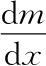

我会论证几乎所有多变量微积分的混淆都来自标记的混淆，在这一章我们会了解在尝试为新的多变量世界构造缩写时会出现的一些困难。
在单变量微积分中，我们在整本书中对导数都一直用两种标记：m'（x）和

。多变量微积分中相同的事情则要难得多：这些思想本身似乎拒绝被任何单独一组缩写清晰地表述。同前面一样，我们有两个选择。第一个选择是直接决定用一组缩写表示多变量微积分的所有思想，这时许多概念上很简单的表达式会显得复杂而且不直观。第二个选择是根据需要切换标记，用最适合手头的问题的那一种。这也有不好的地方，因为涉及多种符号语言。在这一章，我们只能采用后面这种，但是当我们需要切换时会提醒自己这些不同的标记是什么意思。